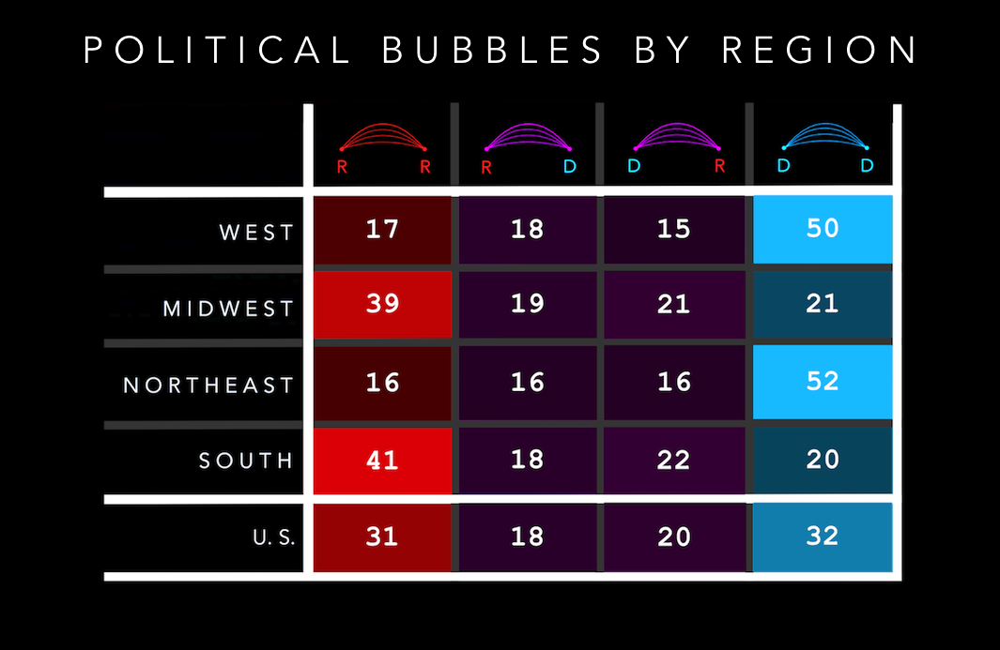

Migration Analysis
Migratory Political Bubbles
The 2016 U.S. Presidential Election left people on both sides of the political aisle very surprised. Many media outlets, pollsters and political predictors hadn’t seen it coming. Since then, several articles have investigated the relative shock of the election using the frameworks of social media bubbles, news bubbles and socio-economic/racial bubbles.
Here, I will discuss a similar framework called migratory bubbles. As a Texan living in San Francisco, people often tell me they would move to Texas, “but only Austin!” They see a parallel liberal haven and would feel comfortable moving there. This desire to move somewhere politically similar is only anecdote, but I want to see whether it’s indicative of a wide-ranging phenomenon that we act upon when moving to a new city.
To begin answering these questions, I obtained a few datasets: the most recent U.S. County-to-County migration outflows (2010-2014), and a Geo-Political County Level dataset including county shapefiles, county demographics and county vote information over the past 3 national Congressional and Presidential elections (2012, 2014, 2016). To visualize the data, I combined the datasets by county id, then mapped the results by Census-defined region. On the maps below, each arc connects a previous county of residence with a current county of residence. Larger county-to-county migration flows are represented by larger arcs.


Political Bubbles Looking now at the map on the right, the most notable and colorful political features are (1) the broad swaths of red underlying matrices (2) the numerous blue cross-country arcs and (3) the glowing blue Eastern seaboard of Boston, New York City, and Washington D.C.
At a glance, these arcs help reveal the growing urban vs. rural divide already noted in other analyses. The maps also lend credence to the existence of flyover states and coastal elites in county-to-county migration. While there is a significant amount of coast to coast movement, and interior to interior movement, the coast to interior movement (& vice versa) is limited.

More than 50% of all people from the West and Northeast migrated from a liberal county to another liberal county. About 40% of all people from the South and Midwest migrated from a conservative county to another conservative county. These are the two dominant versions and visions of the U.S: the Southern/Midwestern Republican base (flyover country) and the Western/Northeastern base (coastal elites). It seems that when moving to new cities, we do in fact tend to stay within our own bubbles.